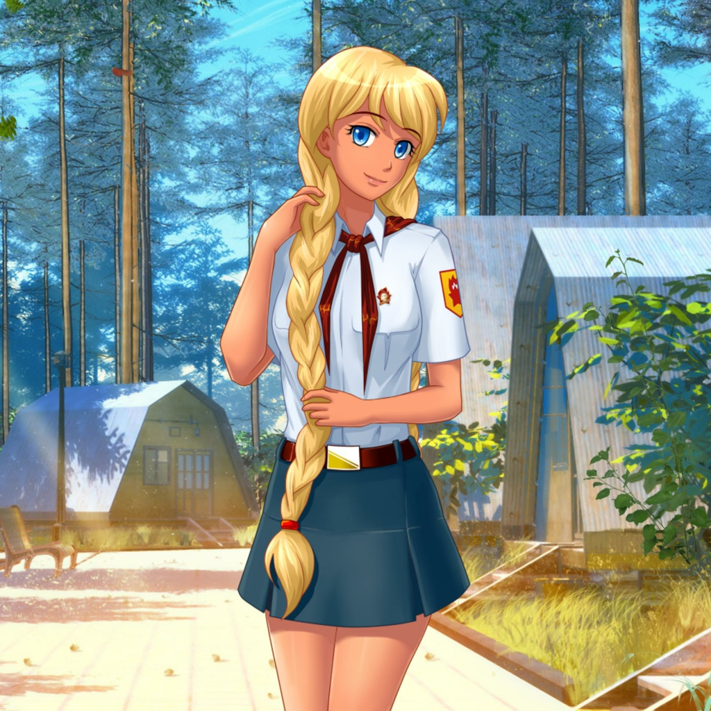

Красивая голубоглазая девушка выше среднего роста с золотистыми волосами, заплетёнными в две ступени косы.
Добрая,
ответственная, фактически исполняет роль помощницы вожатой . Пользуется доверием представителей лагеря, иногда в своих целях.
Однако спорное окончание рута, сцена в лесу после карточного турнира и инициатива, появляющаяся на любовной сцене,
даёт повод сомневаться в её искренности. Раскована, часто не вызывает стеснения или стыда перед главным героем.
Также любит вышивать и общаться. Любит плавание,
причём, каждый раз занимается ими в ночное время суток. Семёну говорит, что любит природу и хочет быть краеведом.